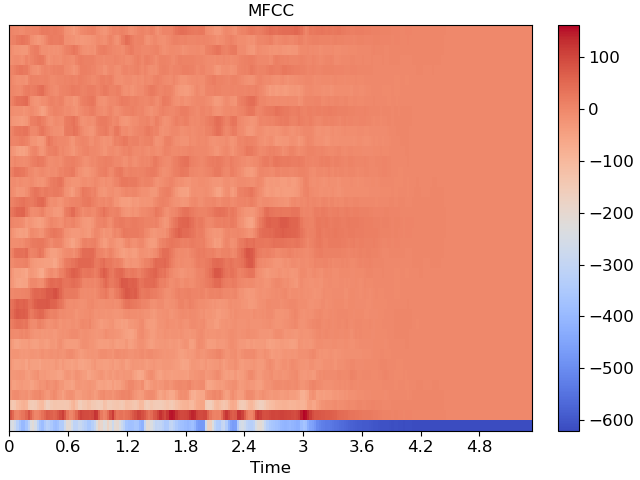
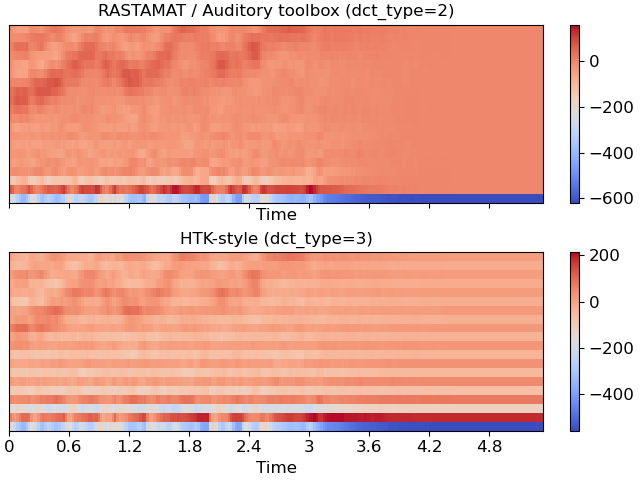

Caution
You're reading an old version of this documentation. If you want up-to-date information, please have a look at 0.9.1.
librosa.feature.mfcc¶
- librosa.feature.mfcc(y=None, sr=22050, S=None, n_mfcc=20, dct_type=2, norm='ortho', lifter=0, **kwargs)[source]¶
Mel-frequency cepstral coefficients (MFCCs)
- Parameters
- ynp.ndarray [shape=(n,)] or None
audio time series
- srnumber > 0 [scalar]
sampling rate of
y- Snp.ndarray [shape=(d, t)] or None
log-power Mel spectrogram
- n_mfcc: int > 0 [scalar]
number of MFCCs to return
- dct_type{1, 2, 3}
Discrete cosine transform (DCT) type. By default, DCT type-2 is used.
- normNone or ‘ortho’
If
dct_typeis 2 or 3, settingnorm='ortho'uses an ortho-normal DCT basis.Normalization is not supported for
dct_type=1.- lifternumber >= 0
If
lifter>0, apply liftering (cepstral filtering) to the MFCCs:M[n, :] <- M[n, :] * (1 + sin(pi * (n + 1) / lifter) * lifter / 2)
Setting
lifter >= 2 * n_mfccemphasizes the higher-order coefficients. Aslifterincreases, the coefficient weighting becomes approximately linear.- kwargsadditional keyword arguments
Arguments to
melspectrogram, if operating on time series input
- Returns
- Mnp.ndarray [shape=(n_mfcc, t)]
MFCC sequence
See also
Examples
Generate mfccs from a time series
>>> y, sr = librosa.load(librosa.ex('trumpet')) >>> librosa.feature.mfcc(y=y, sr=sr) array([[-249.124, -236.652, ..., -619.714, -619.714], [ 73.787, 51.215, ..., 0. , 0. ], ..., [ -10.144, -9.091, ..., 0. , 0. ], [ -13.994, -21.184, ..., 0. , 0. ]], dtype=float32)
Using a different hop length and HTK-style Mel frequencies
>>> librosa.feature.mfcc(y=y, sr=sr, hop_length=1024, htk=True) array([[-274.064, -296.403, ..., -643.958, -643.958], [ 63.888, 0.907, ..., 0. , 0. ], ..., [ 13.069, 36.896, ..., 0. , 0. ], [ -2.986, -13.714, ..., 0. , 0. ]], dtype=float32)
Use a pre-computed log-power Mel spectrogram
>>> S = librosa.feature.melspectrogram(y=y, sr=sr, n_mels=128, ... fmax=8000) >>> librosa.feature.mfcc(S=librosa.power_to_db(S)) array([[-222.66 , -209.08 , ..., -627.181, -627.181], [ 32.214, 2.315, ..., 0. , 0. ], ..., [ 0.872, -4.195, ..., 0. , 0. ], [ 29.123, 33.193, ..., 0. , 0. ]], dtype=float32)
Get more components
>>> mfccs = librosa.feature.mfcc(y=y, sr=sr, n_mfcc=40)
Visualize the MFCC series
>>> import matplotlib.pyplot as plt >>> fig, ax = plt.subplots() >>> img = librosa.display.specshow(mfccs, x_axis='time', ax=ax) >>> fig.colorbar(img, ax=ax) >>> ax.set(title='MFCC')
Compare different DCT bases
>>> m_slaney = librosa.feature.mfcc(y=y, sr=sr, dct_type=2) >>> m_htk = librosa.feature.mfcc(y=y, sr=sr, dct_type=3) >>> fig, ax = plt.subplots(nrows=2, sharex=True, sharey=True) >>> img1 = librosa.display.specshow(m_slaney, x_axis='time', ax=ax[0]) >>> ax[0].set(title='RASTAMAT / Auditory toolbox (dct_type=2)') >>> fig.colorbar(img, ax=[ax[0]]) >>> img2 = librosa.display.specshow(m_htk, x_axis='time', ax=ax[1]) >>> ax[1].set(title='HTK-style (dct_type=3)') >>> fig.colorbar(img2, ax=[ax[1]])
 